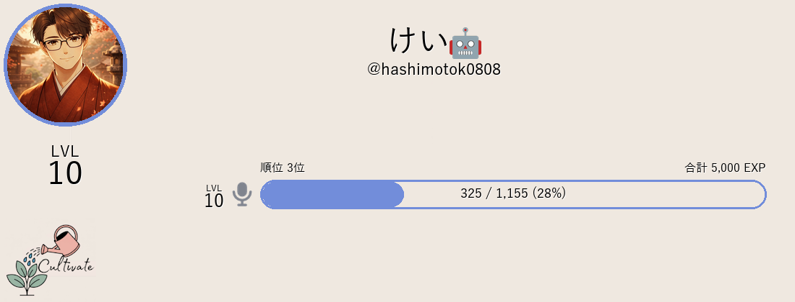

ランクシステム
VC滞在時間を計測してレベルアップ
💡 ランクシステムとは？ ねくさす⋆˚ʚɞ のランクシステムはVC滞在時間に応じて 経験値（XP）を獲得し、レベルアップしていくシステムです。 サーバーごとに自由に成長曲線を設計できます。
🎯 設計思想: レベルは常にXPからその場計算されます。 保存されるのは生のXP値のみで、 ランク表示時に設定に応じてレベルを算出します。 そのため、成長曲線を変更すると過去のXPから 新しいレベルが自動的に再計算されます。
🎤 ねくさす⋆˚ʚɞ では VC 計測専用です
本 Bot ではチャットメッセージ・VC内チャット（インチャット）の XP計測は行いません。 VC滞在時間のみで XP が獲得できます。 そのため設定パネルから「💬 チャット計測」「#️⃣ チャットWH/BL」 「📝 ボーナス」などのチャット系項目は非表示になっています。
概要
ランクシステムは、ユーザーのVC活動量を可視化する機能です。 VCへの接続時間に応じてXPが溜まり、 一定量貯まるとレベルアップします。
ミュート勢の利便性を考慮し、ミュート中でもXPが獲得できる設計です。 VC接続中は1分ごとの自動加算と 切断時の比例計算の両方でXPが付与されます。
機能一覧
| 機能 | 説明 |
|---|---|
| VC経験値計測 | VC接続時間に応じてXPを付与（ミュート中もOK） |
| レベルアップ | 累積XPがしきい値を超えると自動でレベルアップ |
| ランク付与 | 特定レベル到達でロールを自動付与/剥奪（任意設定） |
| ランキング | サーバー内のXPランキングTOP10を表示（0XP除外） |
| 期間ランキング | 週間・月間のランキングを表示・自動リセット |
| ランダムEXP | 固定値・一様ランダム・三角分布・カスタム数式から選択可能 |
| VCフィルター | 特定のVC CH/カテゴリのみXP計測（許可/拒否） |
| XPキャップ | 日次・週次で獲得XPに上限を設定 |
| イベントブースト | 期間限定でXP獲得量を増加 |
| 有効期間 | ランク計測を特定の期間だけ有効化 |
| VC条件 | VC最小人数（自分以外の必要人数）・自分/同席者のロール要件 |
| VC最小接続時間 | 指定分数未満のVC接続ではXP不付与（分単位、デフォルト1分） |
| VC切断時比例計算 | 接続秒数に比例したXP付与（端数も計算） |
経験値の獲得方法
🎤 VC経験値
VCに接続している間、XPが付与されます。
- VC接続中は1分ごとの自動加算（tick処理）でXPが付与
- VC切断時は接続開始時からの経過秒数で比例計算して一括加算
- 1分あたりのXP × (経過秒数 / 60) で計算（端数あり）
- 2人以上が接続している場合のみ有効（自分以外の人数条件は設定可能）
- ミュート中でもXPが獲得可能
- 1人VCでは獲得できません（デフォルト設定）
- VCフィルターで拒否されているVCでは付与されません
- VC最小接続時間未満の接続では一切XPが付与されません
- VC自分のロール・同席者のロール要件を満たさない場合は付与されません
⚠️ 注意: VCから切断すると、接続開始時からの経過時間に応じたXPが 一括で計算されて加算されます。 ただし、Botが停止している間にVCから抜けた場合は XPは付与されず、セッションのみ正しく削除されます。 （Bot停止中もVCに残っていた人は、再開後のXPのみ計測されます）
⏳ VC最小接続時間
VC接続後、指定分数未満の接続ではXPが一切付与されません。 デフォルトは1分で、1分未満のVC接続はXPなしになります。
| 設定値 | 経過時間 | 結果 |
|---|---|---|
1（デフォルト） | 30秒 | ❌ 付与なし（1分未満） |
1（デフォルト） | 90秒 | ✅ 1.5分分のXP |
0（比例計算） | 30秒 | ✅ 0.5分分のXP（比例） |
3 | 150秒 | ✅ 2.5分分のXP |
3 | 120秒 | ❌ 付与なし（3分未満） |
- 0に設定: 最小接続時間の制限がなくなり、1秒から比例計算でXPが付与されます
- 1以上: 指定分数を超えた場合のみXP付与。超えた分は端数まで比例計算（例: 90秒 = 1.5分分）
- 設定は「⏱️ クールダウン設定」Modalから行います（VC専用時はVC最小接続時間のみ設定）
🎤 VC条件
VCでXPを獲得するための条件を設定できます。 設定は「🎤 VC条件設定」Modal（追加機能）で一括管理できます。
| 設定項目 | 説明 | デフォルト |
|---|---|---|
| VC最小人数（自分以外の必要人数） | 自分以外に接続しているBot以外のユーザーが必要な人数 | 1人（合計2人以上） |
| 🎤 自分のロール要件 | 設定したロールを1つでも持っている場合のみXP獲得可能（空=全員OK） | なし（全員OK） |
| 🎤 同席者のロール要件 | 同席者（自分以外）の誰かが設定したロールを持っている場合のみXP獲得可能（空=全員OK） | なし（全員OK） |
💡 ユースケース: 例えば「認証済み」ロールを持っている人のみXPを獲得できるようにしたり、 同席者にVC常連ロールを持っている人がいる場合のみカウントするなど、 交流の質を担保するために使用できます。
ランダムEXPシステム
VC滞在1分あたりの経験値獲得量にバラつきを持たせられる
ランダムEXP機能を搭載しています。4つのモードから選択可能です。
（ねくさす⋆˚ʚɞ では vc_min / vc_max（VC 1分あたりの下限/上限XP）を使用します。
チャット用の chat_exp / random_chat_min / random_chat_max は使用しません）
| モード | 名称 | 挙動 | 用途 |
|---|---|---|---|
| 0 | 🎲 固定 | 常に一定値（設定値 × 倍率） | 安定したXP配分 |
| 1 | 🎲 ランダム① | 一様分布 random.randint(min, max) | シンプルなランダム |
| 2 | 🎲 ランダム② | 三角分布 random.triangular(min, max, min) | 下限寄りの分布 |
| 3 | 🎯 カスタム数式 | ユーザー定義の式で計算 | 自由な設計 |
カスタム数式モード（モード3）
以下の変数が利用可能です：
| 変数 | 説明 |
|---|---|
lo | 設定されている下限XP（VC: vc_min） |
hi | 設定されている上限XP（VC: vc_max） |
R | random.random() — 0～1のランダム値 |
設定例：
# 一様ランダムと同じ挙動
lo + int(R * (hi - lo + 1))
# 正規分布風
int((lo + hi) / 2 + (R - 0.5) * (hi - lo))
# 高確率で最大値近く
int(hi * R ** 0.5)
VC XP はこの1分あたりの値に経過時間（分）を掛け合わせて付与されます。
例: VC XP/分が 10、VC滞在 90秒 なら
10 × 1.5 = 15 XP。
拡張機能
📅 XPキャップ
1日・1週間あたりの獲得XPに上限を設定できます。キャップを超えたXPは切り捨てられます。
- 日次上限: その日の0時からの合計獲得XPを制限
- 週次上限: 月曜0時からの合計獲得XPを制限
- 0を設定すると上限なし（デフォルト）
🚀 イベントブースト
特定の期間、XP獲得量に倍率を掛けられるイベント機能です。
- VC倍率を設定（ねくさす⋆˚ʚɞ ではVCのみ計測のためチャット倍率は使用しません）
- 開始日時・終了日時を設定（期間限定ブースト）
- 期間外や無効時は倍率1.0x（通常状態）
🟢 有効期間
ランクシステムの計測自体を特定の期間だけ有効にできます。
- 開始日時のみ設定 → その日時以降のみ計測
- 終了日時のみ設定 → その日時までのみ計測
- 両方空欄 → 常時有効（デフォルト）
- 有効期間外は一切XPが付与されません
🎤 VCフィルター
特定のVCチャンネル・カテゴリをXP計測の対象・除外に指定できます。
フィルターはホワイトリスト（許可）と ブラックリスト（拒否）の2つを同時に設定できます。
| リスト | 挙動 |
|---|---|
| ✅ ホワイトリスト | 設定されている場合、該当VC CH/カテゴリのみXP計測。未設定（空）の場合は全VCが対象。 |
| ❌ ブラックリスト | 該当VC CH/カテゴリをXP計測から除外。ホワイトリストより優先。 |
以下の4項目を設定できます：
- ✅ カテゴリWH（そのカテゴリ内の全VCが許可対象）
- ✅ チャンネルWH（個別のVCを許可対象）
- ❌ カテゴリBL（そのカテゴリ内の全VCを除外）
- ❌ チャンネルBL（個別のVCを除外）
💡 ねくさす⋆˚ʚɞ について: チャット用の「#️⃣ チャットWH/BL設定」はVC専用モードでは 表示されません。VCフィルターのみ使用できます。
📊 ランキング
/ランキング コマンドでサーバー内のXPランキングを表示できます。
- プリセット一覧がページネーションで表示される
- ✅ 選択ボタン → Modalで期間（全期間/週間/月間）を設定して実行
- ねくさす⋆˚ʚɞ ではVC XPでの順位付けのみです（種別は固定）
- 0XPのユーザーは表示されません
- 表示はメダル絵文字（🥇🥈🥉…）付きのTOP10
期間ランキング
- 週間: ISO週単位（月曜～日曜）。週替わりで自動リセット＆ログ出力（設定時）
- 月間: 暦月単位（1日～月末）。月替わりで自動リセット＆ログ出力（設定時）
- 集計値は vc_exp のその場加算で算出
レベル・経験値の仕組み
成長テンプレート
4種類のテンプレートから選択できます。デフォルトは 🌱 スムーズ成長（初期が優しめ）です。
| テンプレート | 次レベルXP式 | Lv.1→2 | Lv.10→11 | 特徴 |
|---|---|---|---|---|
| 🌱 スムーズ成長 | 5L² + 50L | 55 XP | 1,000 XP | 初期がとても優しい |
| ⚖️ 序盤ハードル+スムーズ成長 | 5L² + 50L + 100 | 155 XP | 1,100 XP | 旧デフォルト |
| 📈 線形成長 | 30L + 20 | 50 XP | 320 XP | 安定した伸び |
| 🍃 緩やか成長 | 3L² + 30L + 15 | 48 XP | 630 XP | 全体的に緩やか |
| レベル | 🌱 スムーズ成長 | ⚖️ 序盤ハードル+スムーズ成長 | 📈 線形成長 | 🍃 緩やか成長 |
|---|---|---|---|---|
| Lv.1 → Lv.2 | 55 XP | 155 XP | 50 XP | 48 XP |
| Lv.5 → Lv.6 | 375 XP | 475 XP | 170 XP | 240 XP |
| Lv.10 → Lv.11 | 1,000 XP | 1,100 XP | 320 XP | 630 XP |
| Lv.50 → Lv.51 | 15,000 XP | 15,100 XP | 1,520 XP | 9,030 XP |
📈 成長曲線グラフ
各テンプレートの累積XP（Lv.1から各レベルに到達するまでの必要総XP）を比較したグラフです。
高度設定：カスタム数式
管理者は任意の数式で成長曲線を設計できます。テンプレートにない独自の曲線も自由に設定可能です。
使用可能な構文
| 要素 | 説明 | 例 |
|---|---|---|
L | 現在のレベル変数 | 5 * L + 100 |
+ - * / // % ** | 四則演算・切り捨て除算・剰余・累乗 | L ** 2 |
min max abs | 最小・最大・絶対値 | max(100, 50 * L) |
pow int float round | 累乗・整数化・浮動小数点化・丸め | pow(L, 2.5) |
設定例
# デフォルト（スムーズ成長）
5 * L ** 2 + 50 * L
# 序盤ハードル+スムーズ成長
5 * L ** 2 + 50 * L + 100
# 線形成長
30 * L + 20
# イベント向け
max(100, 50 * L ** 1.5)
# 超長期サーバー向け
200 * L ** 1.8💡 累積XP式について: 累積XPの計算式は通常、次レベルXP式から自動導出されます。 高度な用途で独自に設定したい場合のみ、累積XP式も入力できます。
コマンド一覧
画像式のランクカードで表示されます（1100×420）。
表示対象: ⭐ メイン設定されたプリセットのみ表示
メイン設定がない場合はエラーメッセージが表示されます。
ねくさす⋆˚ʚɞ ではVC XP のみの単一レベル表示（メーター1本）です。
カスタマイズ: 追加機能「🎴 ランクカード設定」でカラーや表示を変更可能（設定しなくても画像で表示）
※ 画像生成に失敗した場合は、自動的に Embed 表示（VC Lv・VC XP）にフォールバックします。
プリセット一覧がページネーションで表示され、 ✅ 選択ボタンでランキングの期間を設定して実行します。
期間: 全期間 / 週間 / 月間（コマンドの
期間 オプションで省略時も指定可能）ねくさす⋆˚ʚɞ ではVC XP での順位付けのみです。
0XPのユーザーは表示されません。
設定パネル項目一覧
/ランク設定 で開く設定パネルでは、
プリセット一覧から「編集」を選ぶと編集パネルが開きます。
上のSelect: 追加機能のON/OFF（複数選択可）
下のSelect: 各項目の詳細設定
設定項目を選ぶとModalが開くか、直接値が切り替わります。
以下が設定可能な全項目です（ねくさす⋆˚ʚɞ は VC 専用のため、チャット系項目は非表示です）：
| 項目 | 説明 |
|---|---|
| 🟢 プリセット有効 | プリセットのアクティブ状態を切り替え（同時に有効化できるのは最大3つまで） |
| 📛 設定名変更 | プリセット名を設定（Modal） |
| ⭐ メイン設定 | このプリセットをメインに設定。ONにすると他プリセットのメインは自動OFFに（/ランクの表示対象） |
| 💬🎤 XP統合設定 | VC XP/分・VC倍率・ランダムモード・範囲を一括設定（Modal・VC専用時はVC項目のみ表示） |
| 🎯 ランダム数式設定 | カスタム乱数計算式の設定（Modal） |
| ⏱️ クールダウン設定 | VC最小接続時間（分）を設定（Modal・VC専用時はVC最小接続時間のみ） |
| 📋 成長テンプレート選択 | 4種のテンプレートから選択（Select） |
| 📈 カスタム数式設定 | カスタム成長曲線の数式を設定（Modal） |
| 📢 通知CH設定 | レベルアップ通知の送信先CHを設定（Modal） |
| 🔝 上限Lv設定 | 最大到達レベルを設定（Modal） |
| 📋 ログ機能設定 | ログ出力先をカテゴリ別に設定（下記参照） |
⚠️ 有効化上限: 同時に有効化できるプリセットは最大3つまでです。 4つ目以降を有効化するには、先に他のプリセットを 無効化してください（プレミアムサーバーは最大10個まで有効化可能）。
拡張機能設定
拡張機能は上のSelectメニューからON/OFFを切り替えます。 ONにすると下のSelectに詳細設定項目が出現します。 ねくさす⋆˚ʚɞ ではVC計測は必須（解除不可）で、 チャット系の拡張機能（チャット計測・チャットWH/BL・ボーナス・カスタムメッセージ）は 非表示です。
| 機能 | 説明 |
|---|---|
| 🎤 VC計測（必須） | VC XPの計測（ねくさす⋆˚ʚɞ では必須・解除不可） |
| 🎤 VC WH/BL設定 | VC CH/カテゴリの許可/拒否を設定（Modal） |
| 📅 XPキャップ設定 | 日次・週次の獲得XP上限を設定（Modal） |
| 🎤 VC条件設定 | VC最小人数・自分のロール要件・同席者のロール要件を設定（Modal） |
| 🚀 ブースト設定 | イベントブーストのON/OFF・倍率・期間を設定（Modal） |
| 🟢 有効期間 | ランク計測の有効期間を設定（Modal） |
| 🎭 ランクロール制御設定 | レベル到達時のロール付与/剥奪を設定（Modal） |
| 🎭 ランクロール高度制御設定 | 複数ロールの段階的付与など高度設定（Modal） |
| 🎴 ランクカード設定 | ランクカードのカラーコード指定・順位/合計経験値/現在経験値/次レベル必要経験値の表示/非表示を設定（Modal）。設定しなくても `/ランク` は画像式で表示されます |
⭐ メイン設定
複数のプリセットを作成できるランクシステムでは、
メイン設定機能で
/ランク コマンドの表示対象を1つに絞れます。
💡 仕組み:
- 各プリセットのエディタ項目から「⭐ メイン設定」をONにできます
- メインをONにすると、他の全プリセットのメイン設定が自動的にOFFになります
/ランクコマンドはメイン設定されたプリセットのみ表示します- メイン設定が1つもない場合、
/ランクはエラーメッセージを表示します - 設定パネル上ではメイン設定のプリセットに ⭐ アイコンが表示されます
/ランキングやXP計測はメイン設定に関係なく全プリセットが動作します
📋 ログ設定
ランクシステムの各イベントを特定のチャンネルにログ出力できます。 6つのカテゴリに分かれており、それぞれ個別に 出力先チャンネルを設定可能です。 設定されていないカテゴリはグローバル設定にフォールバックします。
ログカテゴリ一覧
| カテゴリ | 設定項目 | 説明 |
|---|---|---|
| 🌐 グローバル | グローバルCH | 他カテゴリ未設定時のフォールバック先 |
| 📊 レベル | レベルアップ | レベルが上がったときのログ |
| レベルダウン | レベルが下がったときのログ | |
| レベルキャップ | 最大レベル到達時のログ | |
| 🎭 ロール | ロール付与 | ランクロールが付与されたときのログ |
| ロール剥奪 | ランクロールが剥奪されたときのログ | |
| 高度付与 | 高度制御によるロール付与のログ | |
| 高度剥奪 | 高度制御によるロール剥奪のログ | |
| ⭐ XP | XPキャップ | XPキャップに達したときのログ |
| VC条件不達 | VC条件不適合でXP不付与のログ | |
| ⚙️ システム | プリセット切替 | メイン設定が切り替えられたときのログ |
| 設定変更 | プリセット設定が変更されたときのログ | |
| エラー | ランクシステム内部でエラーが発生したときのログ | |
| 警告 | ランクシステムの警告事項のログ | |
| 📅 期間ランキング | 期間ランキング | 週間・月間ランキングの集計結果を出力するログ |
設定方法
/ランク設定を実行- プリセットのエディタを開く
- 下のSelectで「📋 ログ機能設定」を選択
- ログ設定Viewでカテゴリを選択 → Modal内でChannelSelect
- 未設定のカテゴリはグローバルCHにフォールバック
- 全て未設定の場合はログは出力されません
ランク表示の例
/ランク を実行すると、以下のような
画像式のランクカードが表示されます。
ねくさす⋆˚ʚɞ ではVC XP のみの単一メーター表示です。
ランクカード（VCモード・メーター1本）

💡 ランクカードの内容:
- 左上: 丸抜きアイコン＋カラーリング（色はランクカード設定で変更可能）
- 中央上部: 表示名・ユーザー名（絵文字はカラーで描画。フォントは
data/fonts/NotoColorEmoji.ttf） - 表示名の文字補完: 日本語フォントに無い文字は、以下の補完フォントから文字ごとに最適なフォントを自動選択して描画
- Yi文字（「꒳」「꒰」など）:
MSYI.TTF/NotoSansYi-Regular.ttf - シンボル文字（「❅」「♔」「⋆」など）:
NotoSansSymbols-Regular.ttf/NotoSansSymbols2-Regular.ttf - 数学記号（「⟡」「⫘」など）:
NotoSansMath-Regular.ttf - 各種言語文字（「ঌ」など）:
NotoSansBengali-Regular.ttf - その他の記号:
NotoSans-Regular.ttf
- Yi文字（「꒳」「꒰」など）:
- ZWJ合成絵文字: 「🐈⬛」のような複合絵文字もカラーで描画可能
- アイコン下: VCレベル（LVL＋数字）
- メーター直上: 順位・合計EXP
- メーター左側: VCレベル（LVL＋数字）
- メーター内: 現在Lv内XP / 次Lv必要XP（進捗%）
- 背景画像は
data/img/rank_default_card.pngに置くことでカスタマイズ可能（無い場合は単色背景）
🎴 表示の隠し方（ランクカード設定）:
- 順位を隠す: メーター直上の順位表示自体を非表示にします
- 合計経験値を隠す: メーター直上の合計EXP表示自体を非表示にします
- 現在経験値を隠す: メーター内の現在Lv内XPを
???にします - 次レベル必要経験値を隠す: メーター内の次Lv必要XPを
???にします - 現在経験値と次レベル必要経験値の両方を隠す: メーター内は進捗%（例:
45%）のみ表示されます
注意事項
- ねくさす⋆˚ʚɞ ではVC計測のみです。チャット発言・インチャットではXPは付与されません
- VCは自分以外の人数が条件を満たす場合のみXPが付与されます（デフォルトは自分以外1人＝合計2人以上）
- レベルアップ通知は設定したチャンネルに送信されます
- カスタム数式の結果が0以下になった場合、デフォルト式に戻ります
- XPキャップは日次リセット（0時）・週次リセット（月曜0時）でリセットされます
- VCフィルターはVC CH ID・カテゴリIDで指定します
- VC最小接続時間のデフォルトは1分です。1分未満のVC接続ではXPが付与されません。0に設定すると比例計算になります
- Bot停止中にVCから抜けた場合はXPは付与されません（Bot再起動時にセッション整合性チェックで補正）
- ランキングではXPが0のユーザーは表示されません
- 期間ランキングの集計値はVC XPの加算で算出されます
- レベルは保存されず、全てXPからその場計算されます。数式を変更しても過去データとの整合性は保たれます
- 有効化できるプリセットは無料サーバーで最大3つ（プレミアムサーバーは最大10つ）です